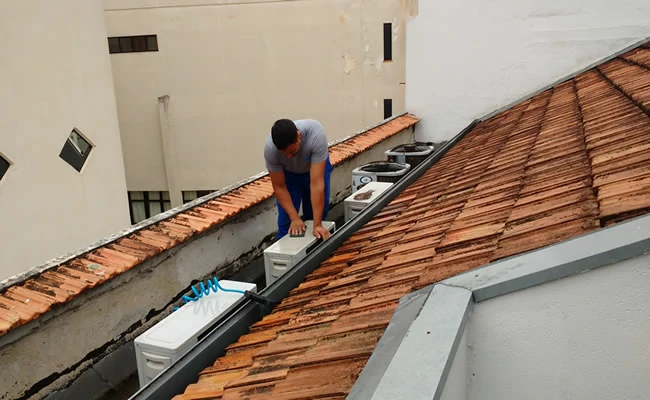
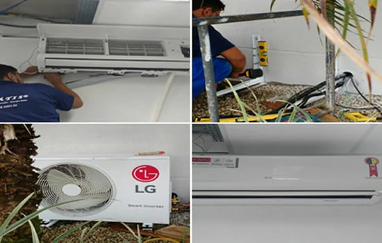
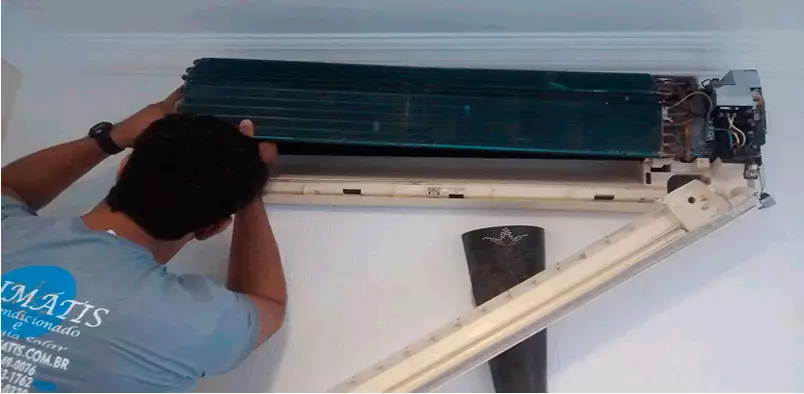
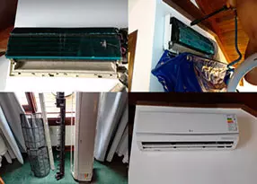
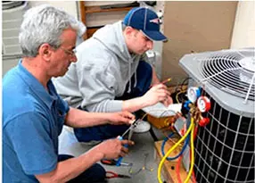
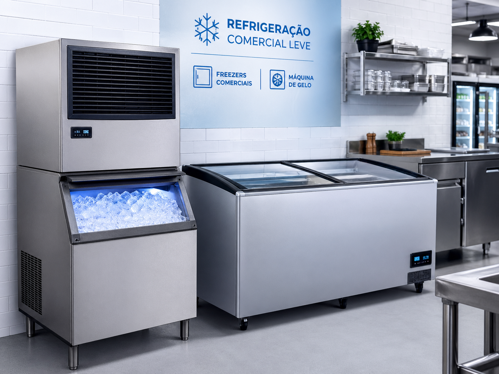

"Chamei eles para uma limpeza no ar condicionado, eles são nota mil, parece novo, equipe show. Super indico."
Luciane Pereira - Posto Aladin
Serviços Climátis
Serviços profissionais em Ar-Condicionado e Refrigeração em Curitiba
Atendimento técnico especializado para residências, comércios e empresas. Instalação, manutenção preventiva, corretiva, PMOC e refrigeração comercial com qualidade e confiança.
Instalação de ar condicionado Curitiba
Manutenção de ar condicionado Curitiba
PMOC Curitiba

Qualidade, valor justo e suporte técnico
Equipe qualificada para ar-condicionado, ventilação e refrigeração comercial Curitiba.
Encontre rápido
Encontre o serviço que você precisa
Digite ou use a busca por voz para localizar instalação, manutenção, infraestrutura, limpeza, PMOC ou refrigeração comercial.
Soluções técnicas
Serviços de ar condicionado em Curitiba
Os equipamentos de ar-condicionado e refrigeração exigem instalação e manutenção técnica. A Climátis trabalha com qualidade, ética, organização, respeito ao cliente e aperfeiçoamento constante por meio de cursos e credenciamentos.

Instalação de Ar-Condicionado Instalação correta, segura e eficiente para melhor desempenho do equipamento. Simulador de Ambiente Estime BTUs, tipo de equipamento e investimento inicial antes do atendimento. Manutenção Preventiva Reduza falhas e aumente a vida útil do aparelho com revisões periódicas.
Manutenção Corretiva Diagnóstico técnico e reparo rápido para equipamentos com defeito.
Higienização Completa Limpeza interna, filtros e eliminação de sujeira e odores.
PMOC Empresarial Plano de manutenção obrigatório para empresas e ambientes corporativos.
Refrigeração Comercial Manutenção em freezers, máquinas de gelo e climatizadores comerciais.
Atendimento técnico
Precisa resolver seu ar-condicionado ou refrigeração com segurança?
Fale com a Climátis para receber orientação técnica, visita e orçamento para instalação, manutenção de ar condicionado Curitiba, PMOC ou refrigeração comercial.
Confiança
Por que contratar a Climátis?
Quando você chama a Climátis, pode esperar resposta rápida, equipe técnica cortês e uma solução econômica para as necessidades do seu ambiente.
Atendimento profissionalOrganização, clareza e respeito ao cliente do início ao fim.
Equipe qualificadaTécnicos treinados em ar-condicionado, ventilação e refrigeração.
Garantia nos serviçosCompromisso técnico e garantia na instalação de equipamentos novos.
Residencial e empresarialAtendimento para residências, comércios, clínicas, lojas e empresas.
Soluções personalizadasAvaliação no local para indicar o caminho técnico mais adequado.
Rapidez no atendimentoAgilidade no diagnóstico e nos reparos realizados em campo ou oficina.
Experiência no setorEmpresa de Curitiba criada em 2014 e focada em qualidade total.
SmartCool
Serviços tradicionais + soluções inteligentes
Além da assistência técnica, a Climátis oferece planos modernos de manutenção com histórico técnico, relatórios e acompanhamento especializado para empresas.
Conhecer SmartCool
Prova social
Clientes que confiam na Climátis
Serviços realizados para residências, comércios e empresas que precisam de ar-condicionado e refrigeração funcionando com segurança.
Instalamos e fazemos a manutenção dos principais fabricantes do mercado.
Serviços relacionados